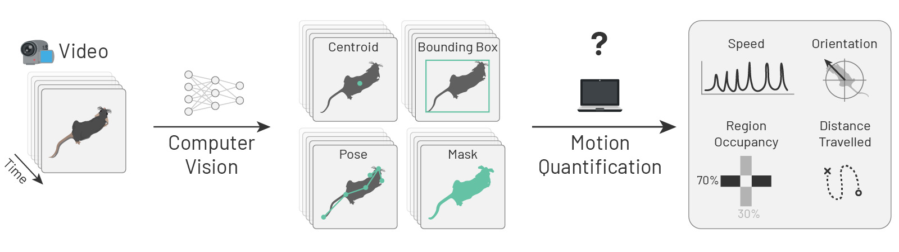
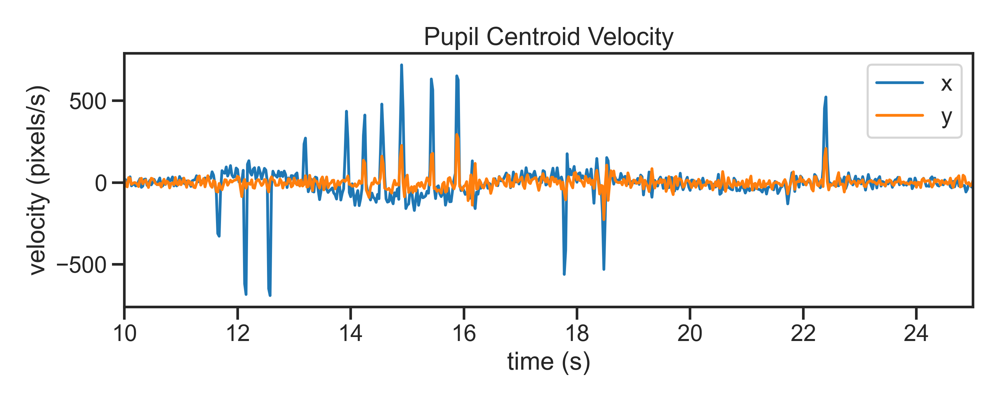

Behavioural Projects Overview
SWC/GCNU Neuroinformatics Unit
Niko Sirmpilatze, Sofia Miñano, Chang Huan Lo
RSEs working on behaviour


Behavioural experiments at SWC
Tracking fiddler crabs in the field

Sofía Miñano, working with the Margrie & Branco labs.
Our approach
A single standardised workflow won’t do
We need general-purpose, versatile, interoperable tools that can be reliably mixed and matched to different needs.
- What are common workflows and tasks?
- Which needs are well-served?
- Support and teach existing tools.
- Which needs are not covered?
- Develop new tools.
Common workflows
Modern computational neuroethology workflow
Markerless pose estimation
Supporting & teaching pose estimation at SWC
- We have deployed DeepLabCut & SLEAP as HPC modules.
- We provide regular hands-on training on using SLEAP.
What about other CV tasks?
Computer vision (CV) tasks other than pose estimation are less accessible.
- Mix-and-match computer vision tools for animal behaviour analysis.
- Still under early development (talk to Sofía!)
What happens after tracking?
movement overview

A unified interface for motion tracks
movement example applications

Sample data: Elevated Plus Maze from Loukia Katsouri | Pupil Tracking from Sepi Keshavarzi.
movement GUI
Sample data from Ann Duan’s Lab.
movement outlook
More advanced methods for outlier detection & smoothing
- ⏳ EKS >
movementdata loader (in progress, PR #670) - ü§î Incorporate approaches from LightningPose & EKS
Modules for specialised applications
- ü§î gait analysis, pupillometry, collective behaviour
What about behaviour segmentation?
We have explored some existing tools:
- keypoint-moseq (unsupervised)
- JABS-behavior-classifier (supervised)
Would love to hear your experiences with others!
No single go-to solution yet
ü§î Is there scope for collaborating on improving existing tools or developing a new robust, easy-to-use interface for behaviour segmentation?
Some remaining challenges
1. We are generating and storing vast amounts of video data.
Determine & share best practices for video compression.
2. Requirements for manual data annotation are honerous.
- Can we leverage self-supervised pre-training like beast?
- Sofía would be interested in making
beastmore plug-and-play for various CV tasks.
Links
movement
- https://movement.neuroinformatics.dev/
- https://github.com/neuroinformatics-unit/movement
ethology
- https://ethology.neuroinformatics.dev/
- https://github.com/neuroinformatics-unit/ethology
animals-in-motion
- https://animals-in-motion.neuroinformatics.dev/
- https://github.com/neuroinformatics-unit/course-animals-in-motion

IBL-AIND-NIU retreat | 2025-10-15